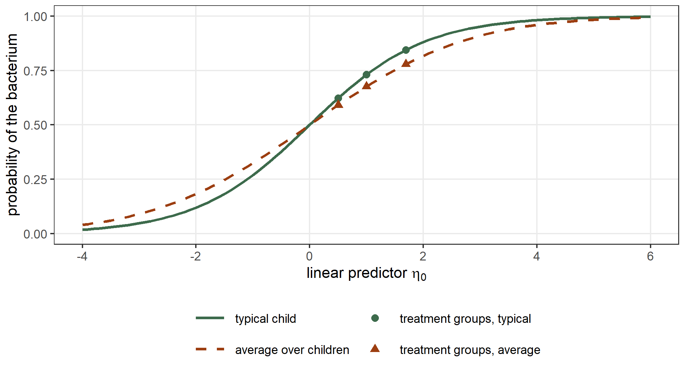

data(epil, package = "MASS")
epil$subject <- factor(epil$subject)
fit_ep <- statmod(y ~ lbase * trt + lage + V4 + random(~ 1 | subject),
distrib = poisson_distrib(), data = epil)
summary(fit_ep)
#> A statmod fit
#>
#> Call: statmod(formula = y ~ lbase * trt + lage + V4 + random(~1 | subject),
#> distrib = poisson_distrib(), data = epil)
#>
#> Distribution: poisson Observations: 236
#>
#> === mu [log link]
#>
#> Parametric terms
#> estimate se z p lower upper
#> (Intercept) 1.852 0.1104 16.79 < 1e-16 1.636 2.069
#> lbase 0.8718 0.1375 6.339 2.306e-10 0.6023 1.141
#> trtprogabide -0.3316 0.1546 -2.145 0.031947 -0.6347 -0.02862
#> lage 0.4703 0.3629 1.296 0.194999 -0.241 1.182
#> V4 -0.1611 0.05458 -2.952 0.003161 -0.2681 -0.05412
#> lbase:trtprogabide 0.3314 0.2126 1.559 0.119046 -0.08528 0.748
#>
#> random(~1 | subject) [59 coefficients, edf 44.41]
#> estimate se lower upper
#> sigma [reml] 0.5319 0.06393 0.4203 0.6732
#> predicted effects (59 levels of subject)
#> Min. 1st Qu. Median Mean 3rd Qu. Max.
#> (Intercept) -1.011 -0.2524 0.001641 0 0.256 1.089
#>
#> 95% intervals, bayesian variance
#> conditional log-likelihood -585.619968 effective df 50.41
#> cAIC 1272.053 cBIC 1446.653
#> fitted in 1.43 s
#> inner max |grad|/se 7.2e-15 min eigen 0.0099
#> outer max |grad|/se 2.7e-07 min eigen 1
#> 1 note: print(summary(fit), notes = TRUE)8 Generalized linear mixed models
A generalized linear mixed model adds random effects to the linear predictor of a generalized linear model (Breslow and Clayton 1993). Given the random effects \(b_i\) of group \(i\), the observations of the group are independent, with \[
y_{ij} \mid b_i \sim F\{\, h^{-1}(\eta_{ij})\,\}, \qquad
\eta_{ij} = x_{ij}^\top\beta + z_{ij}^\top b_i, \qquad
b_i \sim \mathrm{N}(0, \Sigma_b),
\] where \(F\) is a Poisson, Bernoulli, negative binomial or any other distribution, and \(h\) is the link of its parameter. The likelihood of the fixed effects and of \(\Sigma_b\) is an integral over the random effects of each group: \[
L(\beta, \Sigma_b) = \prod_i \int \prod_j f\{y_{ij} \mid
h^{-1}(x_{ij}^\top\beta + z_{ij}^\top b)\}\, \phi(b; 0, \Sigma_b)\, db .
\] For a gaussian response with the identity link this integral has a closed form, which is why the models of Chapter 7 are exact. For any other distribution it has none. statmodels7 replaces it with the Laplace approximation (Tierney and Kadane 1986): the integrand is approximated by a gaussian density centred at its mode \(\hat b_i\), and \[
\log \int e^{g(b)}\, db \approx g(\hat b) - \tfrac12 \log\det\{-g''(\hat b)\}
+ \tfrac{d}{2}\log(2\pi),
\] where \(g\) is the logarithm of the integrand and \(d\) the dimension of \(b\). In statmodels7 the random effects are coefficients with a penalty, so \(\hat b\) is the mode of the penalized likelihood, and the REML criterion applies the same approximation to the fixed effects of the mean as well (Section 2.8). The packages glmmTMB (Brooks et al. 2017) and lme4 (Bates et al. 2015) use the same approximation by default, and we compare with them throughout the chapter.
The other parameters of the distribution can have random effects too: we give random effects to the dispersion \(\theta\) of a negative binomial and to the probability of an extra zero in a zero-inflated model. The last section shows what a link that is not the identity does to the predictions for a new group.
8.1 Counts with a random intercept
We return to the epil data of Section 2.6: the number of epileptic seizures of 59 patients in four periods of two weeks, in a trial of the drug progabide (Thall and Vail 1990). The covariates are the treatment trt, the centered logarithm of the baseline count lbase, the centered logarithm of the age lage and the indicator V4 of the fourth period. Each patient has a random intercept on the log scale (Breslow and Clayton 1993): \[
y_{ij} \mid b_i \sim \mathrm{Poisson}(\mu_{ij}), \qquad
\log\mu_{ij} = x_{ij}^\top\beta + b_i, \qquad b_i \sim \mathrm{N}(0, \tau).
\]
A coefficient is a log rate ratio for one patient: given \(b_i\), the fourth period has \(\exp(\hat\beta_{V4}) = 0.851\) times the seizures of the other three. The standard deviation of the random intercepts is \(\hat\tau = 0.532\), so two patients with the same covariates can differ in their rate by a factor of \(\exp(2 \times 1.96\,\hat\tau) = 8.0\).
With REML = TRUE, glmmTMB() integrates the fixed effects as well, and it gives the same fit:
tmb_ep <- glmmTMB::glmmTMB(y ~ lbase * trt + lage + V4 + (1 | subject),
family = poisson, data = epil, REML = TRUE)
glmmTMB::fixef(tmb_ep)$cond
#> (Intercept) lbase trtprogabide lage
#> 1.8524718 0.8718044 -0.3316466 0.4703227
#> V4 lbase:trtprogabide
#> -0.1610871 0.3313521
glmmTMB::VarCorr(tmb_ep)
#>
#> Conditional model:
#> Groups Name Std.Dev.
#> subject (Intercept) 0.53189
logLik(tmb_ep)
#> 'log Lik.' -672.2633 (df=7)
logLik(fit_ep, type = "marginal")
#> 'log Lik.' -672.2633 (df=7)Maximum likelihood
The functions glmer() and glmmTMB() estimate by maximum likelihood by default. With ml() the fixed effects of the mean are held at the joint mode of the fixed and random effects, and the criterion integrates the random effects alone (Section 2.8). With ml(marginal = "all") the fixed effects are also chosen to maximize the Laplace approximation of \(L(\beta, \tau)\), which is what glmer() does:
fit_ep_ml <- statmod(y ~ lbase * trt + lage + V4 + random(~ 1 | subject),
distrib = poisson_distrib(), data = epil,
outer_criterion = ml())
fit_ep_all <- statmod(y ~ lbase * trt + lage + V4 + random(~ 1 | subject),
distrib = poisson_distrib(), data = epil,
outer_criterion = ml(marginal = "all"))
glmer_ep <- lme4::glmer(y ~ lbase * trt + lage + V4 + (1 | subject),
family = poisson, data = epil)
data.frame(
fit = c("ml()", "ml(marginal = \"all\")", "glmer"),
tau = c(hyper(fit_ep_ml)$estimate, hyper(fit_ep_all)$estimate,
attr(lme4::VarCorr(glmer_ep)$subject, "stddev")),
trt = c(coef(fit_ep_ml)$mu[["trtprogabide"]],
coef(fit_ep_all)$mu[["trtprogabide"]],
lme4::fixef(glmer_ep)[["trtprogabide"]]),
logLik = c(logLik(fit_ep_ml, type = "marginal"),
logLik(fit_ep_all, type = "marginal"), logLik(glmer_ep)))
#> fit tau trt logLik
#> 1 ml() 0.5016679 -0.3289387 -665.4172
#> 2 ml(marginal = "all") 0.5015651 -0.3349636 -665.3587
#> 3 glmer 0.5015329 -0.3348773 -665.3591The second row, ml(marginal = "all"), agrees with glmer() in the third row to four digits. The first row differs from both slightly: for a gaussian response the joint mode and the maximum of \(L\) give the same fixed effects, but for a Poisson response the determinant in the Laplace approximation depends on \(\beta\), so the two differ.
8.2 Binary responses
The data frame bacteria of the MASS package records the presence of the bacterium H. influenzae in 50 children with otitis media, at weeks 0, 2, 4, 6 and 11 (Venables and Ripley 2002, sec. 10.4). The children received a placebo, a drug, or the drug with encouragement to take it (drug+). We code the response as 0 and 1 and compare the visits after week 2 with the first two: \[
y_{ij} \mid b_i \sim \mathrm{Bernoulli}(p_{ij}), \qquad
\mathrm{logit}\, p_{ij} = x_{ij}^\top\beta + b_i, \qquad
b_i \sim \mathrm{N}(0, \tau).
\]
data(bacteria, package = "MASS")
bacteria$y <- as.integer(bacteria$y == "y")
bacteria$late <- as.integer(bacteria$week > 2)
fit_bc <- statmod(y ~ trt + late + random(~ 1 | ID),
distrib = bernoulli_distrib(), data = bacteria)
summary(fit_bc)
#> A statmod fit
#>
#> Call: statmod(formula = y ~ trt + late + random(~1 | ID), distrib = bernoulli_distrib(),
#> data = bacteria)
#>
#> Distribution: bernoulli Observations: 220
#>
#> === mu [logit link]
#>
#> Parametric terms
#> estimate se z p lower upper
#> (Intercept) 3.198 0.58 5.513 3.526e-08 2.061 4.334
#> trtdrug -1.19 0.6841 -1.739 0.0820401 -2.53 0.1512
#> trtdrug+ -0.6941 0.6911 -1.004 0.3152237 -2.049 0.6604
#> late -1.504 0.439 -3.425 0.0006151 -2.364 -0.6431
#>
#> random(~1 | ID) [50 coefficients, edf 22.60]
#> estimate se lower upper
#> sigma [reml] 1.392 0.4363 0.753 2.573
#> predicted effects (50 levels of ID)
#> Min. 1st Qu. Median Mean 3rd Qu. Max.
#> (Intercept) -1.935 -0.6718 0.3976 0 0.6112 1.12
#>
#> 95% intervals, bayesian variance
#> conditional log-likelihood -70.121646 effective df 26.60
#> cAIC 193.434 cBIC 283.687
#> fitted in 140 ms
#> inner max |grad|/se 1.1e-15 min eigen 0.066
#> outer max |grad|/se 6.5e-08 min eigen 1
#> 1 note: print(summary(fit), notes = TRUE)The coefficients are log odds ratios for one child. The coefficients of both treatments are negative, and after week 2 the odds are \(\exp(\hat\beta_{\mathrm{late}}) = 0.222\) times those of the first two visits. The children differ a lot: the standard deviation of the random intercepts is \(\hat\tau = 1.392\) on the logit scale.
glmer() maximizes the Laplace approximation of the likelihood, and the fit of ml(marginal = "all") is the same:
fit_bc_all <- statmod(y ~ trt + late + random(~ 1 | ID),
distrib = bernoulli_distrib(), data = bacteria,
outer_criterion = ml(marginal = "all"))
glmer_bc <- lme4::glmer(y ~ trt + late + (1 | ID), family = binomial,
data = bacteria)
coef(fit_bc_all)$mu[1:4]
#> (Intercept) trtdrug trtdrug+ late
#> 3.5480925 -1.3667272 -0.7827114 -1.5985330
lme4::fixef(glmer_bc)
#> (Intercept) trtdrug trtdrug+ late
#> 3.5479411 -1.3666520 -0.7826412 -1.5984897
c(statmod = hyper(fit_bc_all)$estimate,
glmer = attr(lme4::VarCorr(glmer_bc)$ID, "stddev"))
#> statmod glmer.(Intercept)
#> 1.242414 1.242326
logLik(fit_bc_all, type = "marginal")
#> 'log Lik.' -96.13069 (df=5)
logLik(glmer_bc)
#> 'log Lik.' -96.13072 (df=5)The accuracy of the Laplace approximation
Each child has at most five binary observations, and with so little information on each \(b_i\) the integrand of a group is far from gaussian. The Laplace approximation then underestimates the variance of the random effects (Breslow and Lin 1995). The function glmer() can compute the integral of each group with adaptive Gauss-Hermite quadrature, which is exact as the number of nodes grows. With 25 nodes:
glmer_25 <- lme4::glmer(y ~ trt + late + (1 | ID), family = binomial,
data = bacteria, nAGQ = 25)
lme4::fixef(glmer_25)
#> (Intercept) trtdrug trtdrug+ late
#> 3.5790428 -1.3689470 -0.7891162 -1.6268566
attr(lme4::VarCorr(glmer_25)$ID, "stddev")
#> (Intercept)
#> 1.304313
logLik(glmer_25)
#> 'log Lik.' -95.89706 (df=5)The standard deviation from the quadrature is 1.304, against 1.242 from the Laplace approximation, and the fixed effects move by less than their standard errors. The conclusions do not change here, but with fewer observations per group the difference grows. The Laplace approximation is what statmodels7 computes; the comparison with glmer(nAGQ = ) is a way to check it on a model with one random intercept.
8.3 Negative binomial counts
The data frame Owls of the glmmTMB package records the begging of barn owl nestlings in 27 nests (Roulin and Bersier 2007; Zuur et al. 2009). The response SiblingNegotiation is the number of calls the nestlings made in the 30 seconds before a parent arrived at the nest. The covariates are the food treatment of the nest (Deprived or Satiated), the sex of the parent that arrived, and the number of nestlings, which we enter as an offset so that the model describes the calls per nestling. The counts vary much more than a Poisson distribution allows, so we use the negative binomial distribution of Section 4.4, with \(\mathrm{Var}(y) = \mu + \mu^2/\theta\), and a random intercept for each nest: \[
\log\mu_{ij} = \log n_{ij} + x_{ij}^\top\beta + b_i, \qquad
b_i \sim \mathrm{N}(0, \tau).
\]
data(Owls, package = "glmmTMB")
fit_ow1 <- statmod(SiblingNegotiation ~ FoodTreatment * SexParent +
offset(logBroodSize) + random(~ 1 | Nest),
distrib = negbin2_distrib(), data = Owls)
summary(fit_ow1)
#> A statmod fit
#>
#> Call: statmod(formula = SiblingNegotiation ~ FoodTreatment * SexParent +
#> offset(logBroodSize) + random(~1 | Nest), distrib = negbin2_distrib(),
#> data = Owls)
#>
#> Distribution: negbin2 Observations: 599
#>
#> === mu [log link]
#>
#> Parametric terms
#> estimate se z p lower upper
#> (Intercept) 0.6954 0.1331 5.224 1.749e-07 0.4345 0.9563
#> FoodTreatmentSatiated -0.7708 0.1563 -4.932 8.160e-07 -1.077 -0.4644
#> SexParentMale -0.0287 0.1423 -0.2016 0.8402 -0.3077 0.2503
#> FoodTreatmentSatiated:SexParentMale 0.1573 0.2014 0.7811 0.4348 -0.2374 0.552
#>
#> random(~1 | Nest) [27 coefficients, edf 16.61]
#> estimate se lower upper
#> sigma [reml] 0.37 0.09157 0.2278 0.601
#> predicted effects (27 levels of Nest)
#> Min. 1st Qu. Median Mean 3rd Qu. Max.
#> (Intercept) -0.678 -0.1742 0.01259 0 0.1746 0.4817
#>
#> === theta [log link]
#>
#> Parametric terms
#> estimate se z p lower upper
#> (Intercept) -0.1786 0.07825 -2.283 0.02244 -0.332 -0.02527
#>
#> 95% intervals, bayesian variance
#> conditional log-likelihood -1718.722349 effective df 21.61
#> cAIC 3480.669 cBIC 3575.661
#> fitted in 460 ms
#> inner max |grad|/se 2.3e-15 min eigen 0.059
#> outer max |grad|/se 1.2e-08 min eigen 0.89
#> 1 note: print(summary(fit), notes = TRUE)glmmTMB() with the family nbinom2 has the same parametrization:
tmb_ow1 <- glmmTMB::glmmTMB(SiblingNegotiation ~ FoodTreatment * SexParent +
offset(logBroodSize) + (1 | Nest),
family = glmmTMB::nbinom2, data = Owls,
REML = TRUE)
glmmTMB::fixef(tmb_ow1)$cond
#> (Intercept) FoodTreatmentSatiated
#> 0.69543691 -0.77076088
#> SexParentMale FoodTreatmentSatiated:SexParentMale
#> -0.02869507 0.15730120
glmmTMB::sigma(tmb_ow1)
#> [1] 0.8364134
exp(coef(fit_ow1)$theta[[1]])
#> [1] 0.8364134
logLik(tmb_ow1)
#> 'log Lik.' -1746.645 (df=6)
logLik(fit_ow1, type = "marginal")
#> 'log Lik.' -1746.645 (df=6)The function sigma() of glmmTMB returns \(\hat\theta\) for this family.
Random effects on the dispersion
The equation of \(\theta\) can have covariates and random effects of its own. We let the dispersion depend on the food treatment and on the nest: \[ \log\theta_{ij} = \gamma_0 + \gamma_1 s_{ij} + c_i, \qquad c_i \sim \mathrm{N}(0, \kappa), \] where \(s_{ij}\) is 1 for a satiated nest and \(c_i\) is independent of \(b_i\).
fit_owf <- statmod(SiblingNegotiation ~ FoodTreatment * SexParent +
offset(logBroodSize) + random(~ 1 | Nest) |
theta ~ FoodTreatment,
distrib = negbin2_distrib(), data = Owls)
fit_ow2 <- statmod(SiblingNegotiation ~ FoodTreatment * SexParent +
offset(logBroodSize) + random(~ 1 | Nest) |
theta ~ FoodTreatment + random(~ 1 | Nest),
distrib = negbin2_distrib(), data = Owls)
summary(fit_ow2)
#> A statmod fit
#>
#> Call: statmod(formula = SiblingNegotiation ~ FoodTreatment * SexParent +
#> offset(logBroodSize) + random(~1 | Nest) | theta ~ FoodTreatment +
#> random(~1 | Nest), distrib = negbin2_distrib(), data = Owls)
#>
#> Distribution: negbin2 Observations: 599
#>
#> === mu [log link]
#>
#> Parametric terms
#> estimate se z p lower upper
#> (Intercept) 0.6626 0.09085 7.293 3.028e-13 0.4845 0.8406
#> FoodTreatmentSatiated -0.4974 0.1634 -3.044 0.002335 -0.8177 -0.1771
#> SexParentMale 0.0222 0.101 0.2199 0.825940 -0.1757 0.2201
#> FoodTreatmentSatiated:SexParentMale 0.1287 0.2094 0.6144 0.538930 -0.2818 0.5392
#>
#> random(~1 | Nest) [27 coefficients, edf 10.45]
#> estimate se lower upper
#> sigma [reml] 0.1988 0.0719 0.09789 0.4039
#> predicted effects (27 levels of Nest)
#> Min. 1st Qu. Median Mean 3rd Qu. Max.
#> (Intercept) -0.2354 -0.04492 -0.01453 0 0.06515 0.2862
#>
#> === theta [log link]
#>
#> Parametric terms
#> estimate se z p lower upper
#> (Intercept) 0.4966 0.201 2.471 0.01347 0.1027 0.8905
#> FoodTreatmentSatiated -1.605 0.1721 -9.327 < 1e-16 -1.943 -1.268
#>
#> random(~1 | Nest) [27 coefficients, edf 20.32]
#> estimate se lower upper
#> sigma [reml] 0.8309 0.1615 0.5677 1.216
#> predicted effects (27 levels of Nest)
#> Min. 1st Qu. Median Mean 3rd Qu. Max.
#> (Intercept) -1.126 -0.6875 -0.009783 0.03059 0.6 1.444
#>
#> 95% intervals, bayesian variance
#> conditional log-likelihood -1644.314839 effective df 36.77
#> cAIC 3362.174 cBIC 3523.796
#> fitted in 1.38 s
#> inner max |grad|/se 8e-15 min eigen 0.092
#> outer max |grad|/se 3.7e-07 min eigen 0.55
#> 1 note: print(summary(fit), notes = TRUE)In glmmTMB() the equation of \(\theta\) is the argument dispformula:
tmb_ow2 <- glmmTMB::glmmTMB(SiblingNegotiation ~ FoodTreatment * SexParent +
offset(logBroodSize) + (1 | Nest),
dispformula = ~ FoodTreatment + (1 | Nest),
family = glmmTMB::nbinom2, data = Owls,
REML = TRUE)
glmmTMB::fixef(tmb_ow2)
#>
#> Conditional model:
#> (Intercept) FoodTreatmentSatiated
#> 0.6626 -0.4974
#> SexParentMale FoodTreatmentSatiated:SexParentMale
#> 0.0222 0.1287
#>
#> Dispersion model:
#> (Intercept) FoodTreatmentSatiated
#> 0.4966 -1.6054
glmmTMB::VarCorr(tmb_ow2)
#>
#> Conditional model:
#> Groups Name Std.Dev.
#> Nest (Intercept) 0.19885
#>
#> Dispersion model:
#> Groups Name Std.Dev.
#> Nest (Intercept) 0.83094
logLik(tmb_ow2)
#> 'log Lik.' -1694.011 (df=8)
logLik(fit_ow2, type = "marginal")
#> 'log Lik.' -1694.011 (df=8)The three models have the same fixed effects in the mean, so we compare them with their restricted log-likelihoods:
l1 <- as.numeric(logLik(fit_ow1, type = "marginal"))
lf <- as.numeric(logLik(fit_owf, type = "marginal"))
l2 <- as.numeric(logLik(fit_ow2, type = "marginal"))
lr_food <- 2 * (lf - l1)
lr_nest <- 2 * (l2 - lf)
c(lr_food = lr_food, lr_nest = lr_nest)
#> lr_food lr_nest
#> 58.35346 46.91444
pchisq(lr_food, df = 1, lower.tail = FALSE)
#> [1] 2.190112e-14The food treatment changes the dispersion: in a satiated nest \(\hat\theta\) is \(\exp(\hat\gamma_1) = 0.201\) times that of a deprived nest, so the counts vary more. The nests differ in their dispersion too. Under the smaller model the variance \(\kappa^2\) is zero, on the boundary of its range, so lr_nest does not have the \(\chi^2_1\) distribution (Self and Liang 1987); its p-value is at most that of \(\chi^2_1\), which is 7.4e-12. With the random effects on \(\theta\) the standard deviation of the nests’ effects on the mean falls from 0.370 to 0.199: part of what looked like a difference in the mean calls of the nests is a difference in how much their calls vary.
8.4 Zero inflation
The data frame Salamanders of the glmmTMB package gives the number of salamanders found in 23 streams of the Appalachian mountains, some of them affected by coal mining (Price et al. 2016). Each stream was sampled four times, and the counts are given for seven species and life stages (spp). Many counts are zero, and some zeros come from a species that is absent from a stream. The zero-inflated distribution of Section 5.4 describes this: with probability \(\pi\) the count is a structural zero, and otherwise it is a Poisson count with mean \(\mu\), \[
P(y = 0) = \pi + (1 - \pi)e^{-\mu}, \qquad
P(y = k) = (1 - \pi)\frac{\mu^k e^{-\mu}}{k!}, \quad k \ge 1
\] (Lambert 1992). We give each stream a random effect in \(\log\mu\) and one in \(\mathrm{logit}\,\pi\): \[
\log\mu_{ij} = x_{ij}^\top\beta + b_i, \qquad
\mathrm{logit}\,\pi_{ij} = w_{ij}^\top\alpha + c_i ,
\] with \(b_i \sim \mathrm{N}(0, \tau)\) and \(c_i \sim \mathrm{N}(0, \kappa)\).
data(Salamanders, package = "glmmTMB")
Salamanders$site <- factor(as.character(Salamanders$site))
fit_zi <- statmod(count ~ spp + mined + random(~ 1 | site) |
zi ~ mined + random(~ 1 | site),
distrib = zero_inflated(poisson_distrib()), data = Salamanders)
summary(fit_zi)
#> A statmod fit
#>
#> Call: statmod(formula = count ~ spp + mined + random(~1 | site) | zi ~
#> mined + random(~1 | site), distrib = zero_inflated(poisson_distrib()),
#> data = Salamanders)
#>
#> Distribution: zero-inflated poisson Observations: 644
#>
#> === mu [log link]
#>
#> Parametric terms
#> estimate se z p lower upper
#> (Intercept) -0.1141 0.206 -0.5536 0.579835 -0.5178 0.2897
#> sppPR -1.258 0.2267 -5.549 2.873e-08 -1.702 -0.8137
#> sppDM 0.2726 0.1409 1.935 0.052999 -0.003527 0.5488
#> sppEC-A -0.5889 0.1816 -3.242 0.001188 -0.9449 -0.2328
#> sppEC-L 0.6703 0.1298 5.165 2.406e-07 0.416 0.9247
#> sppDES-L 0.6226 0.1309 4.757 1.965e-06 0.3661 0.8791
#> sppDF 0.09092 0.1477 0.6157 0.538110 -0.1985 0.3804
#> minedno 1.042 0.2015 5.17 2.338e-07 0.6469 1.437
#>
#> random(~1 | site) [23 coefficients, edf 11.49]
#> estimate se lower upper
#> sigma [reml] 0.2897 0.08008 0.1685 0.498
#> predicted effects (23 levels of site)
#> Min. 1st Qu. Median Mean 3rd Qu. Max.
#> (Intercept) -0.5286 -0.1167 -0.0087 0 0.1133 0.5036
#>
#> === zi [logit link]
#>
#> Parametric terms
#> estimate se z p lower upper
#> (Intercept) 1.141 0.3417 3.34 0.0008375 0.4717 1.811
#> minedno -2.376 0.4547 -5.225 1.737e-07 -3.267 -1.485
#>
#> random(~1 | site) [23 coefficients, edf 13.36]
#> estimate se lower upper
#> sigma [reml] 0.8118 0.205 0.4949 1.332
#> predicted effects (23 levels of site)
#> Min. 1st Qu. Median Mean 3rd Qu. Max.
#> (Intercept) -1.477 -0.2056 0.02754 0.04437 0.4116 1.543
#>
#> 95% intervals, bayesian variance
#> conditional log-likelihood -841.252789 effective df 34.84
#> cAIC 1752.190 cBIC 1907.854
#> fitted in 1.02 s
#> inner max |grad|/se 6.1e-15 min eigen 0.018
#> outer max |grad|/se 6.7e-09 min eigen 0.23
#> 1 note: print(summary(fit), notes = TRUE)In a stream affected by mining (mined is yes, the reference level) the probability of a structural zero for a typical stream is \(\mathrm{logit}^{-1}(\hat\alpha_0) = 0.758\), and in an unaffected stream it is \(\mathrm{logit}^{-1}(\hat\alpha_0 + \hat\alpha_1) =
0.447\). Where the species are present, the unaffected streams also have \(\exp(\hat\beta_{\mathrm{minedno}}) = 2.83\) times the salamanders. In glmmTMB() the equation of \(\pi\) is the argument ziformula:
tmb_zi <- glmmTMB::glmmTMB(count ~ spp + mined + (1 | site),
ziformula = ~ mined + (1 | site),
family = poisson, data = Salamanders, REML = TRUE)
glmmTMB::fixef(tmb_zi)
#>
#> Conditional model:
#> (Intercept) sppPR sppDM sppEC-A sppEC-L sppDES-L
#> -0.11406 -1.25800 0.27261 -0.58886 0.67034 0.62257
#> sppDF minedno
#> 0.09092 1.04177
#>
#> Zero-inflation model:
#> (Intercept) minedno
#> 1.141 -2.376
glmmTMB::VarCorr(tmb_zi)
#>
#> Conditional model:
#> Groups Name Std.Dev.
#> site (Intercept) 0.28968
#>
#> Zero-inflation model:
#> Groups Name Std.Dev.
#> site (Intercept) 0.81182
logLik(tmb_zi)
#> 'log Lik.' -886.5645 (df=12)
logLik(fit_zi, type = "marginal")
#> 'log Lik.' -886.5645 (df=12)A negative binomial count
The Poisson part may be too narrow. We replace it with a negative binomial and keep the random effect on \(\mu\). The equation of \(\pi\) keeps the mining covariate, but we drop its random effect; the next subsection shows why. To compare the two distributions of the count, we also fit the Poisson model with the same equation for \(\pi\):
fit_zinb <- statmod(count ~ spp + mined + random(~ 1 | site) | zi ~ mined,
distrib = zero_inflated(negbin2_distrib()), data = Salamanders)
summary(fit_zinb)
#> A statmod fit
#>
#> Call: statmod(formula = count ~ spp + mined + random(~1 | site) | zi ~
#> mined, distrib = zero_inflated(negbin2_distrib()), data = Salamanders)
#>
#> Distribution: zero-inflated negbin2 Observations: 644
#>
#> === mu [log link]
#>
#> Parametric terms
#> estimate se z p lower upper
#> (Intercept) -0.9845 0.3395 -2.9 0.003728 -1.65 -0.3192
#> sppPR -1.364 0.2859 -4.77 1.845e-06 -1.924 -0.8033
#> sppDM 0.3026 0.2232 1.356 0.175236 -0.1349 0.7401
#> sppEC-A -0.7417 0.2526 -2.936 0.003323 -1.237 -0.2466
#> sppEC-L 0.5386 0.2194 2.455 0.014082 0.1086 0.9686
#> sppDES-L 0.7096 0.2171 3.269 0.001079 0.2842 1.135
#> sppDF 0.1831 0.2254 0.8121 0.416754 -0.2588 0.6249
#> minedno 1.621 0.3269 4.958 7.134e-07 0.9799 2.261
#>
#> random(~1 | site) [23 coefficients, edf 13.75]
#> estimate se lower upper
#> sigma [reml] 0.4922 0.1583 0.262 0.9245
#> predicted effects (23 levels of site)
#> Min. 1st Qu. Median Mean 3rd Qu. Max.
#> (Intercept) -0.6098 -0.3093 -0.03821 0 0.1967 0.9024
#>
#> === theta [log link]
#>
#> Parametric terms
#> estimate se z p lower upper
#> (Intercept) 0.05095 0.3029 0.1682 0.8664 -0.5427 0.6446
#>
#> === zi [logit link]
#>
#> Parametric terms
#> estimate se z p lower upper
#> (Intercept) -0.2136 0.5179 -0.4124 0.6800 -1.229 0.8015
#> minedno -4.573 10.96 -0.4173 0.6765 -26.05 16.91
#>
#> 95% intervals, bayesian variance
#> conditional log-likelihood -802.116895 effective df 24.75
#> cAIC 1653.730 cBIC 1764.299
#> fitted in 1.71 s
#> inner max |grad|/se 1.6e-15 min eigen 0.031
#> outer max |grad|/se 2e-06 min eigen 0.11
#> 1 note: print(summary(fit), notes = TRUE)
tmb_zinb <- glmmTMB::glmmTMB(count ~ spp + mined + (1 | site),
ziformula = ~ mined, family = glmmTMB::nbinom2,
data = Salamanders, REML = TRUE)
logLik(tmb_zinb)
#> 'log Lik.' -828.2679 (df=12)
logLik(fit_zinb, type = "marginal")
#> 'log Lik.' -828.2679 (df=12)
fit_zip2 <- statmod(count ~ spp + mined + random(~ 1 | site) | zi ~ mined,
distrib = zero_inflated(poisson_distrib()), data = Salamanders)
c(zip = AIC(fit_zip2), zinb = AIC(fit_zinb))
#> zip zinb
#> 1774.94 1653.73The two models in the last line have the same equation for \(\pi\), so the comparison concerns only the distribution of the count. The negative binomial has the smaller conditional AIC. With it, the probability of a structural zero in an unaffected stream goes to zero: \(\hat\alpha_0 + \hat\alpha_1 = -4.79\), a probability of 0.0083, with a standard error of 11.0 for \(\hat\alpha_1\). On the logit scale the probability approaches zero only as the coefficient goes to \(-\infty\), so the likelihood is flat in that direction and the standard error is large. glmmTMB() gives the same estimate. The negative binomial explains the zeros of the unaffected streams by its larger variance, and the extra zeros are needed only in the affected streams.
A random effect on the zero inflation
In the Poisson model the probability \(\pi\) had a random effect on the stream. We can ask for the same random effect in the negative binomial model. The fit takes more than a minute, and during it the sparse Cholesky factorization reports many times that a matrix is not positive definite; we hide these warnings here:
fit_zinb_re <- statmod(count ~ spp + mined + random(~ 1 | site) |
zi ~ mined + random(~ 1 | site),
distrib = zero_inflated(negbin2_distrib()),
data = Salamanders)
summary(fit_zinb_re)
#> A statmod fit
#>
#> Call: statmod(formula = count ~ spp + mined + random(~1 | site) | zi ~
#> mined + random(~1 | site), distrib = zero_inflated(negbin2_distrib()),
#> data = Salamanders)
#>
#> Distribution: zero-inflated negbin2 Observations: 644
#>
#> === mu [log link]
#>
#> Parametric terms
#> estimate se z p lower upper
#> (Intercept) -0.317 0.2778 -1.141 0.253876 -0.8614 0.2275
#> sppPR -1.366 0.2762 -4.946 7.559e-07 -1.908 -0.8249
#> sppDM 0.2977 0.2141 1.391 0.164304 -0.1219 0.7173
#> sppEC-A -0.7435 0.243 -3.059 0.002219 -1.22 -0.2671
#> sppEC-L 0.5713 0.2098 2.723 0.006479 0.16 0.9825
#> sppDES-L 0.6545 0.2087 3.136 0.001713 0.2454 1.064
#> sppDF 0.06707 0.2185 0.3069 0.758915 -0.3612 0.4954
#> minedno 1.045 0.2598 4.022 5.769e-05 0.5357 1.554
#>
#> random(~1 | site) [23 coefficients, edf 8.69]
#> estimate
#> sigma [reml] 0.3085
#> predicted effects (23 levels of site)
#> Min. 1st Qu. Median Mean 3rd Qu. Max.
#> (Intercept) -0.3718 -0.08504 -0.02784 0 0.07868 0.3584
#>
#> === theta [log link]
#>
#> Parametric terms
#> estimate se z p lower upper
#> (Intercept) 0.2563 0.1634 1.569 0.1168 -0.06395 0.5765
#>
#> === zi [logit link]
#>
#> Parametric terms
#> estimate se z p lower upper
#> (Intercept) 1.113 0.6868 1.62 0.105190 -0.2333 2.459
#> minedno -5.777 1.862 -3.102 0.001923 -9.427 -2.127
#>
#> random(~1 | site) [23 coefficients, edf 8.97]
#> estimate
#> sigma [reml] 1.973
#> predicted effects (23 levels of site)
#> Min. 1st Qu. Median Mean 3rd Qu. Max.
#> (Intercept) -2.813 -0.3658 -0.064 0.1813 0.4104 4.657
#>
#> 95% intervals, bayesian variance
#> conditional log-likelihood -788.709858 effective df 28.67
#> cAIC 1634.753 cBIC 1762.827
#> fitted in 17.3 s
#> inner max |grad|/se 9.2e-05 min eigen 0.00029
#> outer max |grad|/se 0.5 min eigen -5
#> 3 notes: print(summary(fit), notes = TRUE)
statmod_certificate(fit_zinb_re)$state
#> [1] "unknown"The certificate is unknown. The curvature of the REML criterion at the reported point is not negative definite (the min eigen of the outer line of the summary is negative), so the fit cannot confirm that the two standard deviations sit at a maximum of the criterion, and the summary gives them no standard error. glmmTMB() has the same difficulty with this model:
tmb_zinb_re <- glmmTMB::glmmTMB(count ~ spp + mined + (1 | site),
ziformula = ~ mined + (1 | site),
family = glmmTMB::nbinom2,
data = Salamanders, REML = TRUE)
glmmTMB::fixef(tmb_zinb_re)$zi
#> (Intercept) minedno
#> 0.6051498 -5.2860848
glmmTMB::VarCorr(tmb_zinb_re)
#>
#> Conditional model:
#> Groups Name Std.Dev.
#> site (Intercept) 0.24626
#>
#> Zero-inflation model:
#> Groups Name Std.Dev.
#> site (Intercept) 1.9541
logLik(tmb_zinb_re)
#> 'log Lik.' NA (df=13)It reports a Hessian that is not positive definite and a false convergence, and it returns no log-likelihood. The two packages reach similar estimates of the standard deviation of the random effect on \(\pi\) (1.973 against 1.954), but different estimates of the intercept \(\hat\alpha_0\) (1.11 against 0.61) and of the slope \(\hat\alpha_1\) (-5.78 against -5.29). Neither package can confirm its estimates. The cause is the one of the previous subsection. In the unaffected streams \(\pi\) is already close to zero, \(\hat\alpha_1\) moves towards \(-\infty\), and the likelihood is flat in that direction. A random effect on \(\mathrm{logit}\,\pi\) adds a second direction that the data do not determine well. For this reason we keep the negative binomial model without it.
8.5 Predictions for a new group
Section 7.7 introduced the arguments random, interval and predictive of predict(). With a link that is not the identity two things change: the typical group and the average group have different predictions, and the intervals are not symmetric around the prediction. We write \(h\) for the link of the parameter, \(\eta_0 = x^\top\hat\beta\) for the linear predictor of a typical group, \(\mathrm{se}_0\) for its standard error, and \(v = z^\top\Sigma_b z\) for the variance that the random effects of a new group add to the predictor.
Two predictions of a parameter. With \(u = z^\top b \sim \mathrm{N}(0, \sqrt{v})\):
random |
prediction | log link | logit link |
|---|---|---|---|
"zero" |
\(h^{-1}(\eta_0)\), the group with \(b = 0\) | \(e^{\eta_0}\) | \(\mathrm{logit}^{-1}(\eta_0)\) |
"marginal" |
\(\bar\theta = \mathbb{E}_u\{h^{-1}(\eta_0 + u)\}\), the average over the groups | \(e^{\eta_0 + v/2}\) | Gauss-Hermite quadrature |
The log column is the moment generating function of \(u\) at \(t = 1\), as for \(\sigma\) in Section 7.7. For the logit link the integral has no closed form. A useful approximation comes from approximating the logistic distribution function with a normal one (Zeger, Liang, and Albert 1988): \[ \bar p \approx \mathrm{logit}^{-1}\!\left(\frac{\eta_0}{\sqrt{1 + c^2 v}}\right), \qquad c = \frac{16\sqrt3}{15\pi} . \] The average probability is therefore closer to one half than the probability of the typical group.
Three intervals. The predictor of a new group is \(\eta^* = \eta_0 + e + u\), where \(e \sim \mathrm{N}(0, \mathrm{se}_0)\) is the estimation error of \(\eta_0\). Its variance is \(s^2 = \mathrm{se}_0^2 + v\).
interval |
the interval covers | ends | se |
|---|---|---|---|
"confidence" |
\(h^{-1}(x^\top\beta)\), the parameter of a typical group | \(h^{-1}(\eta_0 \pm 1.96\,\mathrm{se}_0)\) | delta method |
"group" |
\(\theta^* = h^{-1}(\eta^*)\), the parameter of a new group | \(h^{-1}(\eta_0 \pm 1.96\, s)\) | \(\mathrm{sd}(\theta^*)\) |
"prediction" |
one new observation \(y\) of a new group | quantiles of \(G\), below | \(\mathrm{sd}(y)\) |
The inverse link is monotone, so the quantiles of \(\eta^*\) carried through it are the quantiles of \(\theta^*\), and the group interval is exact. Its standard error is the standard deviation of \(\theta^*\). For the log link \(\theta^*\) is lognormal, and \[
\mathrm{sd}(\theta^*) = e^{\eta_0 + s^2/2}\sqrt{e^{s^2} - 1} ;
\] for any other link predict() computes the two moments of \(\theta^*\) with Gauss-Hermite quadrature. The prediction fit is \(h^{-1}(\eta_0)\) under random = "zero", which is the median of \(\theta^*\), and \(\bar\theta\) under random = "marginal".
One new observation. Given the predictors, \(y\) has the distribution \(F\) of the family, so its distribution function averages \(F\) over the predictors: \[ G(y) = \int F\{y \mid h^{-1}(\eta)\}\, \phi(\eta; \eta_0, s^2)\, d\eta . \] With random effects in several equations the integral is over all their predictors. For a count the ends are integers:
| quantity | value |
|---|---|
| lower end | the smallest \(y\) with \(G(y) \ge 0.025\) |
| prediction | the smallest \(y\) with \(G(y) \ge 0.5\) |
| upper end | the smallest \(y\) with \(G(y) \ge 0.975\) |
so the probability that the interval holds a new count is at least 95%. For a binary response \(y\) is Bernoulli with \(P(y = 1) = \bar p\), and the interval is always \([0, 1]\).
The typical child and the average child. We predict a child of each treatment group of the bacteria data after week 2, and compute \(\bar p\) with integrate() and with the approximation:
new_child <- data.frame(trt = factor(levels(bacteria$trt), levels(bacteria$trt)),
late = 1, ID = "new")
p_zero <- predict(fit_bc, what = "mu", newdata = new_child, random = "zero")
p_marg <- predict(fit_bc, what = "mu", newdata = new_child,
random = "marginal")
eta0 <- predict(fit_bc, what = "link:mu", newdata = new_child,
random = "zero")
tau_bc <- hyper(fit_bc)$estimate
p_int <- vapply(eta0, function(e) {
integrate(function(u) plogis(e + u) * dnorm(u, sd = tau_bc),
lower = -Inf, upper = Inf)$value
}, numeric(1))
c16 <- 16 * sqrt(3) / (15 * pi)
p_zeger <- plogis(eta0 / sqrt(1 + c16^2 * tau_bc^2))
data.frame(trt = levels(bacteria$trt), zero = p_zero, marginal = p_marg,
integrate = p_int, approximation = p_zeger)
#> trt zero marginal integrate approximation
#> 1 placebo 0.8447472 0.7794131 0.7794131 0.7876542
#> 2 drug 0.6234759 0.5913459 0.5913459 0.5963455
#> 3 drug+ 0.7310451 0.6761847 0.6761847 0.6843359The column marginal agrees with integrate(), and the approximation is within 0.008 of both.
The log odds ratio of the average child. The coefficient \(\hat\beta_{\mathrm{drug}} = -1.190\) is the log odds ratio of the drug for one child. The log odds ratio between the average probabilities of the two groups is smaller, by about the factor \(1/\sqrt{1 + c^2 v}\):
lor_cond <- coef(fit_bc)$mu[["trtdrug"]]
lor_marg <- qlogis(p_marg[2]) - qlogis(p_marg[1])
c(conditional = lor_cond, marginal = lor_marg, ratio = lor_marg / lor_cond,
approximation = 1 / sqrt(1 + c16^2 * tau_bc^2))
#> conditional marginal ratio approximation
#> -1.1896549 -0.8927170 0.7504000 0.7738233| log odds ratio | compares | estimated by |
|---|---|---|
| conditional | the same child with and without the drug | the mixed model |
| marginal | the proportion of children with the bacterium in a treated and in an untreated population | a model without random effects (Zeger, Liang, and Albert 1988) |
Figure 8.1 shows the two curves.

The dispersion of a new nest. We predict \(\theta\) of a new nest of the Owls data, deprived and satiated, with a male parent and four nestlings, and compute the ends and the standard deviation of the group interval from the formulas above. On the log scale the standard error is \(s\):
new_nest <- data.frame(
FoodTreatment = factor(c("Deprived", "Satiated"),
levels(Owls$FoodTreatment)),
SexParent = factor("Male", levels(Owls$SexParent)),
logBroodSize = log(4), Nest = "new")
g_theta <- predict(fit_ow2, what = "theta", newdata = new_nest,
random = "zero", interval = "group")
g_theta
#> fit se lower upper
#> 1 1.6430900 2.4571960 0.30758940 8.777106
#> 2 0.3299536 0.4943356 0.06167996 1.765069
g_link <- predict(fit_ow2, what = "link:theta", newdata = new_nest,
random = "zero", interval = "group")
g_link
#> fit se lower upper
#> 1 0.4965786 0.8548974 -1.178990 2.1721468
#> 2 -1.1088032 0.8556244 -2.785796 0.5681899
s_th <- g_link$se
cbind(lower = exp(g_link$fit - qnorm(0.975) * s_th),
upper = exp(g_link$fit + qnorm(0.975) * s_th),
sd = exp(g_link$fit + s_th^2 / 2) * sqrt(exp(s_th^2) - 1))
#> lower upper sd
#> [1,] 0.30758940 8.777106 2.4571960
#> [2,] 0.06167996 1.765069 0.4943356The interval is wide, because \(\hat\kappa = 0.83\): the dispersion of one new nest can be 5.3 times larger or smaller than that of the typical nest. The standard deviation of \(\theta^*\) is larger than the fit, because the lognormal distribution has a long right tail. A first-order approximation, \(e^{\eta_0}\,s\), would give 1.40 for the deprived nest, against 2.46.
One new count of a new nest. We check the prediction interval by simulation: a million new nests, each with its two random effects, and one count from each. The estimates are held at their values (predictive = "plugin"), so that the simulation and predict() describe the same distribution:
p_calls <- predict(fit_ow2, what = "response", newdata = new_nest, se = TRUE,
random = "zero", interval = "prediction",
predictive = "plugin")
p_calls
#> fit se lower upper
#> 1 6 8.323423 0 29
#> 2 1 12.096442 0 35
eta_mu <- predict(fit_ow2, what = "link:mu", newdata = new_nest,
random = "zero")
eta_th <- predict(fit_ow2, what = "link:theta", newdata = new_nest,
random = "zero")
tau_ow <- hyper(fit_ow2)$estimate[1]
kappa_ow <- hyper(fit_ow2)$estimate[2]
set.seed(1)
n_sim <- 1e6
b_sim <- rnorm(n_sim, mean = 0, sd = tau_ow)
c_sim <- rnorm(n_sim, mean = 0, sd = kappa_ow)
y_sim <- rnbinom(n_sim, mu = exp(eta_mu[1] + b_sim),
size = exp(eta_th[1] + c_sim))
quantile(y_sim, probs = c(0.025, 0.5, 0.975), type = 1)
#> 2.5% 50% 97.5%
#> 0 6 29
c(G_below_upper = mean(y_sim <= p_calls$upper[1] - 1),
G_at_upper = mean(y_sim <= p_calls$upper[1]))
#> G_below_upper G_at_upper
#> 0.974395 0.976945
sd(y_sim)
#> [1] 8.302989The quantiles of the simulated counts are the ends of the interval for the deprived nest, and the empirical distribution function crosses 0.975 at the upper end. The standard deviation agrees to within half a per cent, which is the Monte Carlo error of a count with such a long tail.
A new stream of the salamanders. In the zero-inflated Poisson model the probability of a zero and the counts of a new stream depend on its two random effects. We predict a new stream affected by mining and one that is not, for the species GP, and check the unaffected one by simulation:
new_site <- data.frame(spp = factor("GP", levels(Salamanders$spp)),
mined = factor(c("yes", "no"), levels(Salamanders$mined)),
site = "new")
p_sal <- predict(fit_zi, what = "response", newdata = new_site, se = TRUE,
random = "zero", interval = "prediction",
predictive = "plugin")
p_sal
#> fit se lower upper
#> 1 0 0.6630967 0 2
#> 2 2 1.9335834 0 6
eta_mu_s <- predict(fit_zi, what = "link:mu", newdata = new_site,
random = "zero")
eta_zi_s <- predict(fit_zi, what = "link:zi", newdata = new_site,
random = "zero")
tau_s <- hyper(fit_zi)$estimate[1]
kappa_s <- hyper(fit_zi)$estimate[2]
set.seed(2)
zero_sim <- runif(n_sim) < plogis(eta_zi_s[2] + rnorm(n_sim, sd = kappa_s))
y_sal <- ifelse(zero_sim, 0,
rpois(n_sim, exp(eta_mu_s[2] + rnorm(n_sim, sd = tau_s))))
quantile(y_sal, probs = c(0.025, 0.5, 0.975), type = 1)
#> 2.5% 50% 97.5%
#> 0 2 6
mean(y_sal == 0)
#> [1] 0.320435
predict(fit_zi, what = "mean", newdata = new_site, random = "marginal")
#> [1] 0.2494876 1.9721708
mean(y_sal)
#> [1] 1.969618For an unaffected stream the probability of no salamanders of this species in one sample is 0.32, and the mean count over new streams is the value of random = "marginal" for what = "mean".